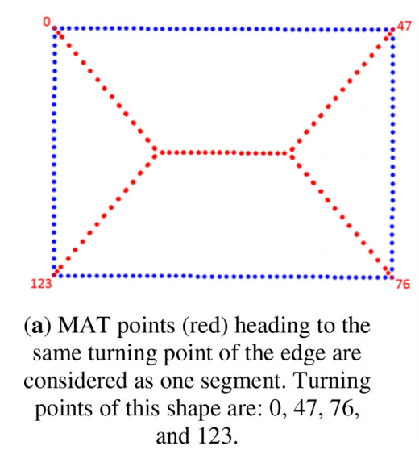

资源
原文
Abstract
由于建筑物出现的多样性和复杂性，从城市环境的机载激光雷达点云数据中自动提取和描绘建筑物仍然是一项具有挑战性的任务。中轴变换（MAT）能够描述对象的几何形状和拓扑结构，但从未应用于建筑屋顶轮廓提取。它通过对象的中心线或骨架结构而不是边界来表示对象的形状。
我们提出了一种稳定的、基于 MAT 的方法来检测建筑 corner point，然后将这些 corner point 连接起来形成建筑边界多边形。
- 首先，我们对通过 alpha-shape 算法获取的一组建筑边缘点的 2D MAT 进行近似，以导出所谓的建筑屋顶骨架 (building roof skeleton)。
- 然后，我们提出了一种分层的 corner point 感知分割方法，根据骨架点的特性，即所谓的分离角、最大内切圆的半径和定义边缘点索引，对骨架点进行聚类。
- 从每个片段，通过基于片段内的骨架点位置外推零半径内切圆的位置来估计 corner point。
结果表明，骨架化 (skeletonization) 是一种很有前途的工具，可以从远非完美的地理点云数据中提取建筑物轮廓的相关几何信息。
1. Introduction
绘制建筑屋顶轮廓，也称为建筑足迹，对于数字基础地图制图、规划、监控、基础设施管理和可持续城市设计至关重要。
人造城市物体（建筑物、道路、运河）通常具有对称的形状，具有直线和锐角。这样的特性使得能够从 ALS 点云中自动提取边界轮廓。
**中轴变换（MAT）**是一种强大的形状提取技术，它提供了紧凑的几何表示，同时保留了输入形状的拓扑特性。MAT 由 Blum 引入，用于描述生物形状。好家伙 1967 年的……然而，MAT 有一个根本的缺点，那就是它对输入形状的小扰动的不稳定性，这可能会干扰 MAT 分支的拓扑。
角是重要的局部特征，关于其位置的知识可以最大限度地减少进一步的数据处理，而不会丢失原始物体形状的特定特征。在给定城市地区的空中点云的情况下，我们提出了一种基于 MAT 描述符的精确屋顶角点自动提取建筑轮廓的方法。
2. Related work
随着人们对 GIS（地理信息系统）数字地图产品的兴趣增加，从各种遥感数据中提取建筑轮廓的开发工作也得到了加强。
文献中发现的 MAT 或骨架的各种定义对应于计算 MAT 的不同方法，导致具有不同性质的不同结果。通常，MAT 算法通常侧重于推导表面中心线或中轴的几何位置，即所谓的骨架化。到目前为止，文献中有许多骨架化方法及其在二维和三维物体描述中的应用。现有的骨架化方法通常分为四种主要方法：
- 基于形态学细化的方法
- 使用平面形状的中轴变换的基于几何的方法
- 基于距离的函数
- 由函数而不是使用距离函数生成的一般场函数
Ma 等人使用基于最近邻居和法线的收缩球方法估计 3D 中轴点，收缩球算法不仅准确且计算高效，而且被认为是现有最简单、最快速的曲面骨架化方法。
3. Methodology
我们的研究重点是 MAT 的自适应，用于从地图和空间建模所需的噪声点云数据中提取建筑轮廓。我们扩展了迭代收缩球算法的工作，并开发了一种利用骨架特征的策略，以实现精确提取建筑轮廓的目标。
本文还提出了一种新的骨骼点分割方法。所提出的方法在处理有噪声的表面边界和重建建筑轮廓方面达到了最先进的水平。通过优化基于骨架的特征的使用，它需要最少的人机交互。具体而言，我们的工作贡献如下：
- 我们集成了骨架衍生特征和全局特征，以执行处理不同点密度和噪声水平的鲁棒骨架点（MAT）分割。
- 我们结合有序的表面点索引和骨骼衍生特征来检测角点。
- 我们介绍了使用骨骼衍生特征来准确估计建筑拐角位置。
由于本研究需要在二维空间中使用 MAT，我们采用了 Ma 等人的二维收缩圆算法。我们提出的自动提取建筑屋顶轮廓的方法的一般工作流程由下面的主要步骤组成。
- (b)，通过 alpha-shape 算法提取建筑物边界点。
- (c)，使用 2D 收缩圆算法将边界点转换为其 2D MAT 或骨架点。
- (d)，我们应用我们的 MAT 分割，通过利用它们的几何属性来分割 MAT 点。
- (e)，使用这些线段来检测角点。
- (f )，基于检测到的角点进行多边形化，形成二维闭合多段线。
本研究使用了扩展收缩圆方法，该方法实现了 Peters 提出的去噪启发式方法。我们将物体表面 的骨架定义为 中最大内切圆 B(c，\rho ) 的一组中心点 ，其中 表示该圆的半径。
2D 骨架点也称为中轴点。通过将圆半径 函数与中轴点集相关联，我们获得了所谓的中轴变换（MAT）。
如上图所示：
- 中轴点（红色点）形成矩形对象 的 MAT 骨架（蓝色线）。
- 每个最大内切圆（灰色）至少接触 （黑色轮廓）边界的两个点。
- 任何非最大圆或未内切于 （绿色圆）的圆心都将被忽略，不被视为中轴点。
3.1 Alpha-shape
给定分割的建筑点，创建建筑轮廓从 Edelsbruner 引入的 alpha-shape 算法的边界点选择开始。众所周知，alpha-shape 能够以所需的细节水平保留有限点集的小形状细节。2D alpha 形状是基于输入点的 2D Delaunay 三角测量构建的。该方法识别根据参数 定义的边界点，该参数控制边界形状的细节级别。给定平面上的一组点 和 的值，该算法的工作原理如下：
-
计算 的 Delaunay 三角剖分 。中的所有边都是 alpha 形状 的候选边。
-
对于具有端点 和 的 的所有边 ：
a. 找到半径为 的两个圆 和 ，其中心 和 包含相同边 的端点 和点 。这些圆根据以下圆心定义：
其中 是端点 和 之间的长度。
b. 如果至少有一个圆的内部不包含来自 的点，则 是有效的边界边，
否则该边将被删除。
-
所有有效边界边的并集形成 形状
-
的值是一个实数，。当 接近 时，形状可能会收缩，形成孔洞，并可能变得不连续。在极端情况下， 的值会导致数据点本身。当 向无穷大增加时， 形状接近点集 的凸包。
在我们的研究领域，我们根据经验决定 值介于 和 。
3.2. The shrinking circle principles
给定曲面 上具有相应法向量 的一组噪声边点 。MAT 点被定义为 中与边界 相切的最大内切圆 的中心 和相应半径 的集合。圆 和相应圆心 分别表示为中间圆和中间轴点。
缩圆法的基本原理如下：
-
中间圆在至少两个点 上接触表面，其中 。
-
沿着由边点 的法向量 定义的线，圆 的半径 迭代减小，直到 在 处接触 ，其中 ，圆心 在通过 的线上。如果找到最大 圆，则迭代停止。
-
中间圆是一个最大的空圆，这意味着它不包含任何表面点。
3.3. Skeletal points extraction
为了获得表面 的 MAT，计算中轴点 。因此，通过以下步骤计算 中所有采样点 的最大内切圆 ：
-
的初始圆 是基于初始半径 定义的。 值设置得足够大，例如等于两个输入点之间的最大距离。
-
给定 ，其中 表示第 个迭代步骤，圆心 由下式给出：
-
找到最接近 的曲面点 ，使得
-
和 定义的圆的圆最大值测试：
a. 如果从 到 的距离等于圆的半径 ，则圆 最大，并且 是中轴点。
b. 否则，使用以下方程计算下一个收缩圆的半径 ：
其中：
当找到步骤 (a) 中描述的中轴点时，迭代将停止。
(a) 显示了在点 处接触 的圆的连续收缩，这在最后一次迭代中产生了中间圆 和中间轴点 。
给定一个定义的内表面和外表面 ，MAT 由两个组成部分组成：
- 一部分内表面 ，由所谓的内中轴点组成
- 另一部分外表面 ，外中轴点。
对于每个 ，通过迭代步骤 2 到 4 来计算相应的内部和外部 MAT 点。向内法线 用于内部 MAT 计算，而向外法线 –N_p 用于外部 MAT 计算。
图 (b) 显示了用于计算内圈（黑色箭头）和外圈（红色箭头）的中轴点 和法向矢量 的方向的几何结构。
噪声处理是克服 MAT 对噪声边界的敏感性的重要步骤。在输入表面上存在小凸起或噪声的情况下，圆可能收缩过多，从而可能导致不期望的中轴点。这种过度收缩的圆通常具有较小的分离角 。分离角 （见 b）是线 （连接点 和中轴点 的线）和线 （连接点 和中轴点 的线）之间的角度。
$ \cos $ $ \alpha $ = $ \frac {\overrightarrow {c_ {p}p}.\overrightarrow {c_ {p}q}}{|\overrightarrow {c_ {p}p|}\cdot |\overrightarrow {c_ {p}}q|} $
在上述收缩方法期间。好圆被定义为收缩方法中分离角 大于分离角阈值 的最后一个圆。
在这一步骤之后，每个中轴点 都具有许多属性。每个 MAT 点 的属性是中轴点 、半径 、分离角 、表面点 和 的索引以及法向量 或 。从理论上讲，使用这些 MAT 属性，可以完全重建 的几何。
3.4. MAT point segmentation
MAT 属性提供了丰富的信息，可用于将 MAT 点分组为不同的内侧段或分支。
为了进一步应用 MAT，识别 MAT 点连通性的两个有用观察结果如下：
- 朝向同一转折点或拐角的 MAT 点被视为一个线段。下图中正方形 的精细采样表面点。产生精细 MAT 点，其中一些 MAT 点逐渐接近特定转折点。从这个意义上说，从最大内切圆创建的每个 MAT 点，在表面点 和 处接触，指定一个转折点，该转折点位于表面点 与 之间。如 (b) 所示，两个表面点 、（红色文本）的中值与角的索引（76）相似。
- MAT 点的分离角 预计接近 。如 (c) 所示，矩形的 MAT 点具有分布在 左右的分离角。
在实践中，表面点不是完美分布的、无噪声的，不像下图所示那样规则。(a) 表面边界上的小扰动会产生所谓的骨架噪声。在检测形状角点时，骨骼噪声可能会引起虚假片段，从而导致虚假角点。

我们的分割标准依赖于边界点的转折点位置的接近度。直观地，彼此靠近并且具有相似特征值的 MAT 点被分组在一起。此外，我们预计半径 将沿着线段分支逐渐变化。
基于上述观察，我们使用三个全局阈值和四个 MAT 衍生特征来分割 MAT 点。全局阈值与 MAT 无关，定义全局阈值是为了提高分割精度。全局阈值为：
-
G.1. 距离物体表面 的缓冲区距离 。只有位于指定缓冲区内的 MAT 点才会被考虑用于分割。该阈值用于排除由具有向外法线的两个边缘点的最大圆产生的不可用的外部 MAT 点。这些 MAT 点是远离曲面点的典型噪声。
-
G.2. 每个线段的最小点数 minPts。任何点少于给定 minPts 的线段都被视为线段噪声。
-
点索引间隔 设置两个候选角点之间的最小距离：
- 是所需的最小边缘长度。
- 是点云间隔。
- 点索引间隔 准则是为了避免在短边界和噪声边界的情况下，在确定的最小边长处出现虚假或额外的角。
例如，给定一组具有 点云间隔 的点，我们需要提取最小长度 的建筑边缘，因此， 设置为 。
想象一下，下图中的点 13 与点 11、16 和 20 具有相同的中间性质。点 13 将不被视为角点，因为它与点 11 的点差小于 3。
从 MAT 属性派生的自定义特征或 MAT 派生的特征描述如下：
-
F.1. 考虑分离角 接近 的 MAT 点 进行分割。这里的“闭合”由分离角差值阈值 指定。给定的 阈值之外的 MAT 点被视为骨架噪声。这意味着，如果 MAT 点 的分离角 α_\mathbf p 在 和 之间，则将考虑对其进行分割。
-
F.2. 每个边点 都被赋予一个唯一的索引。对于角点感知分割，期望具有相似特征的 MAT 点 属于同一聚类。
例如，上图中的 和 导致 。具有相似 值的不同 MAT 点可能属于同一 MAT 段。
-
F.3. 点 的法线与上一点 p_{i−1} 的法线和下一点 的法线之间的法线角差 分别由（|N_p−N_{p_{i−1}}|）和（|N_p−N_{p_{i+1}}|）定义。
-
F.4. 最大中位指数差值阈值 。此功能用于避免由于曲面上的扰动或噪声（特别是在拐角附近）而导致的伪拐角和附加分段。
给定一组 MAT 点 ，每个中轴点 具有 6 个特征 ，MAT 点分割工作如下：
-
使用全局阈值 G.1 选择位于距离物体表面 的特定缓冲距离内的 MAT 点 。
-
仅选择 MAT 衍生特征 F.1 指定的具有可接受分离角 的 MAT 点 。
-
使用 MAT 导出的特征 F.2 计算来自步骤 2 的滤波 MAT 点的中值。
-
识别所有可能的候选角 并将它们放在列表 K_1、K_2… 中。
-
给定来自步骤 3 的候选角 ，该算法搜索中值与 相似的 MAT 点。
-
如果 |med_{pq}−r_{idx}|≤\Delta pt，则 MAT 点 被分配给中间段。
-
如 G.2 中所定义，任何成员点少于 的内侧节段 都将被移除。该步骤将消除边缘出现缺陷时可能形成的假线段。
接下来使用内侧段来估计真实的角，其中一个内侧段对应于一个角。
3.5. Corner point estimation
我们不是将边缘点指定为角，而是基于中轴点的位置及其相应的半径来估计角的位置。MAT 点的最大内切圆的半径 将朝着拐角逐渐减小。
3.6. Building outline evaluation metrics
应用两种不同的评估指标来评估所提出的工作流在满足要求方面的性能。
建筑外形规格：转角几何精度和转角检测精度。
位置精度，也称为几何位置精度或位置精度，用作测量建筑物多边形在绝对地理参考系统中相对于其真实位置的定位情况的主要指标。
我们使用 RMSE（均方根误差）来测量参考和结果中建筑转角位置（X 和 Y 坐标）之间的平方差的平均值。针对所有检测到的建筑转角，计算完整建筑相对于相应参考转角位置的 RMSE。
， 得到的角点坐标
, 地面实况中角点的坐标
角点总数
由于某些建筑的复杂性，并不是所有的角落都能被完全检测到。因此，我们通过三种检索测量来评估拐角检测的准确性：召回率、精确度和 F1 分数。精确性用于衡量准确性或保真度，而回忆则用于衡量完整性。F1 分数是精确度和召回率的加权平均值。
在上图中的建筑多边形中，正确角的数量（）为 4，而错误角的数量（绿色椭圆内）为 1，未检测到的角或偏移超过一米的角的数量 （如蓝色圆圈所示）为 2。
该配置的 ，，。
4. Results and discussions
4.1. Experiments of the study areas
在实验中，我们使用了三个具有不同景观特征和机载激光雷达点云规范的研究区域。
4.2. General overview
4.3. Comparison analysis
4.4. Computational and complexity analysis
分析时间复杂度。
5. Conclusions and recommendations
Alpha Shape 算法
1 | |
1 | |
函数 plot_circle 用于绘制圆形。
它接受三个参数：centers 表示圆心的坐标，rs 表示圆的半径，ax 为 matplotlib 中的 Axes 对象，用于绘图。
-
代码首先获取 centers 数组的形状，确定要绘制多少个圆。然后通过 for 循环遍历所有圆心。
-
在每次循环中，
- 首先使用
np.arange生成一个从 0 到 2π 的 theta 数组，步长为 0.01。这个数组表示圆的角度。 - 然后根据圆的参数计算出每个角度对应的 x 和 y 坐标。具体来说，
- x 坐标是圆心的 x 坐标加上半径乘以角度的余弦值，
- y 坐标是圆心的 y 坐标加上半径乘以角度的正弦值。
- 首先使用
最后使用 ax.plot 绘制出这些点，连接成一个圆形曲线。参数 ‘b-’ 表示蓝色实线，alpha=0.1 表示透明度为 0.1。
这样，通过不同的圆心和半径，可以在图像上绘制出多个圆形。
1 | |
函数 edge_check_vaild 用于检查边缘是否合法，也就是检查连接两点的线段是否符合圆的半径要求。
它接受四个参数：e 表示边、tree 表示点云的 KDTree，r 表示圆的半径，err 表示检查误差。
- 代码首先提取出两个端点的坐标 xp 和 xq，然后计算出边的长度 L。如果 L 大于 2r，那么这条边一定无法构成圆形，因此直接返回 False。
- 如果 L 小于等于 2r，那么说明这条边有可能是圆的一部分。可以根据端点的坐标计算出连接它们的单位向量 vec，以及垂直于该向量的法向量 normal。然后通过中垂线的方程，求得圆心 c1 和 c2。
- 接下来，使用 KDTree 的
query_radius方法，查询以 c1 和 c2 为圆心，半径为 r+err 的圆内有多少个点。- 如果点的数量小于等于 2，那么说明这是一个有效的边缘。返回 True 以及圆心的坐标 c1 或 c2（视情况而定）。
- 如果点的数量大于 2，则说明这个圆不是有效的圆，因为至少包含了三个点。返回 False 和 -1 表示无效边缘。
1 | |
函数 boundary_extract 用于从 2D 点云中提取边界。它接受三个参数：points 表示点的坐标数组，alpha 表示半径与平均边长比值的倒数，err 表示计算误差。
- 首先根据给定的点云数据构建 KDTree 和 Delaunay 三角剖分。然后遍历每个三角形，对于三角形的每条边，调用
edge_check_valid函数检查它是否符合圆形要求，并将符合要求的边缘和圆心加入到 edges 和 centers 列表中。 - 最后返回边缘列表和圆心列表。
需要注意的是，这里的 err 参数是因为计算距离时可能存在误差。实际上，在某些情况下，由于计算精度问题，同样的点云数据、相同的参数 alpha 可能会得到不同的结果。因此，如果发现提取边界的结果与预期不符，可以尝试调整 err 参数或重新生成点云数据。
1 | |
函数 show_edge 用于可视化提取的边缘。它接受四个参数：edges 表示边缘列表，points 表示点的坐标数组，circle 表示圆心坐标，r 表示圆的半径。
函数首先创建一个新的图表，并使用 scatter 方法绘制出点云。然后遍历边缘列表，使用 plot 方法绘制出边缘。如果指定了圆心坐标和半径，调用 plot_circle 函数将圆形绘制出来。
最后使用 show 方法展示图表。
1 | |
这段代码首先生成 200 个随机的 2D 点，然后调用 boundary_extract 函数从中提取出边界，并将 alpha 参数设置为 6,计算误差 err 为 10e-5。然后使用提取的边界和圆心，以及 points 数组调用 show_edge 函数进行展示。